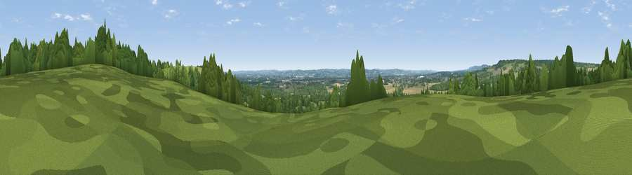

Viewpoint near Mereworth
#33546 in England · top 46% of its area beats it · near MereworthWhere it is
The exact computed spot (TQ 66225 52275). Click the marker for map links.
The view, rendered

A 360° render of this exact spot computed from the terrain model, tree cover and land cover — summer colours, afternoon light, calibrated against photographs of famous viewpoints. Real trees, hedges and buildings will differ in detail.
The panorama
Grey silhouette: terrain skyline in each direction (720 bearings, Earth curvature and refraction included). Dashed green: skyline with trees (+15 m) and buildings (+8 m) as obstacles. Blue strip: how far the ground is visible on each bearing.
Where the view opens
Wedge length = distance to the farthest visible ground on that bearing (vegetation-aware). Rings at 10, 25 and 50 km.
What fills the view
41% woodland · 36% grassland · 21% cropland · 2% built-up
Angular shares of the visible panorama (visual magnitude), not map area. Landscape diversity 0.51 (0–1 Shannon).
Key numbers
More beautiful places nearby
The staircase of upgrades: each row has a higher view potential than everything closer. Driving times are estimates from straight-line distance, calibrated against real road routing — check an actual route before setting out.
| Place | Direction | Drive | Score |
|---|---|---|---|
| Birchetts Hill | ESE · 1 km | ~2 min | 56.3 |
| Viewpoint near Wrotham | NNW · 9 km | ~17 min | 62.1 |
| Viewpoint near Wrotham | NNW · 9 km | ~18 min | 66.6 |
| Viewpoint near Shipbourne | W · 9 km | ~18 min | 69.1 |
| Viewpoint near Westwell | E · 32 km | ~50 min | 72.2 |
| Viewpoint near Fairlight | SSE · 45 km | ~65 min | 74.7 |
| Viewpoint near Fairlight | SSE · 45 km | ~65 min | 75.1 |
| Viewpoint near Fairlight | SSE · 45 km | ~66 min | 79.0 |
51.24543, 0.38018 · source: screening · position refined by local search. Computed location — check access rights before visiting.